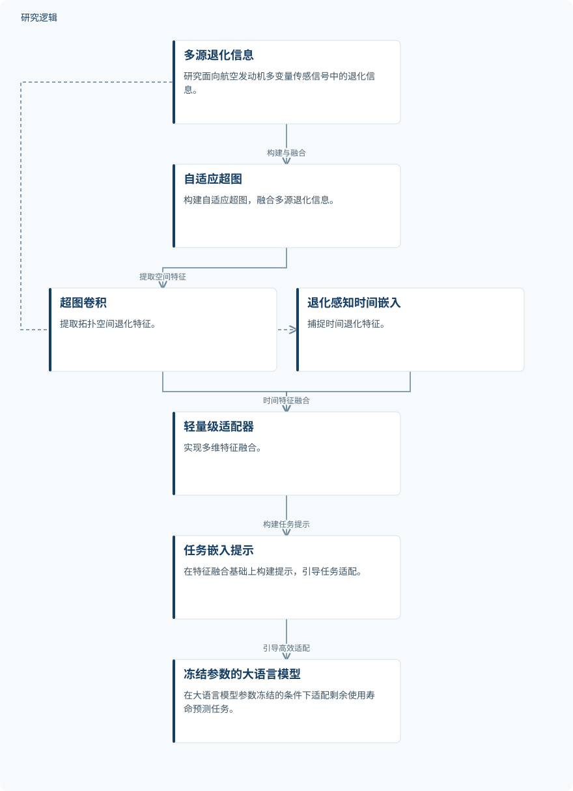

摘要解读
HyperLLM：超图增强大语言模型的航空发动机剩余使用寿命预测
HyperLLM: Hypergraph-Enhanced Large Language Model for Remaining Useful Life Prediction
解读更新 2026-11-10 18:09 · 依据公开摘要整理，未核验全文细节
航空发动机退化过程复杂，多变量传感器信号又相互耦合，如何从中提取有效信息、预测剩余使用寿命？HyperLLM将超图建模与大语言模型结合，阅读价值在于理解它如何组织空间关联、时间退化与任务适配。
文章目录
寿命预测的难点：退化复杂与信号耦合
准确预测航空发动机的剩余使用寿命（RUL），对保障飞行安全具有重要意义。摘要指出，发动机退化过程复杂，难以准确建模；与此同时，多变量传感器信号存在较强耦合，阻碍退化信息的有效提取与利用。研究因此需要同时处理退化过程和信号之间的关联。
摘要将大语言模型的理解与推理能力视为建模复杂退化过程的新切入点。本文提出的超图增强方法，正是尝试把多源传感信息组织成可供大语言模型利用的退化表征。
空间与时间特征融合，再适配冻结的大模型
方法首先构建自适应超图，融合多源退化信息，并通过超图卷积提取拓扑空间退化特征。与此同时，退化感知时间嵌入模块负责捕捉时间退化特征，随后利用轻量级适配器完成多维特征融合。
在融合表征的基础上，方法构建任务嵌入提示，引导大语言模型完成任务适配，同时保持其参数冻结。摘要将这一设计与保留大语言模型先验知识、增强预测性能联系起来，但未展开提示形式、适配器结构或具体训练配置。
依据摘要整理的HyperLLM方法示意


概括摘要明确描述的空间与时间特征提取、融合及任务适配关系，不代表论文原图，也不补充未报告的实现细节。
下载 SVG图示关系说明
实线表示相邻阶段的信息流，虚线表示跨阶段联系或反馈。
多源退化信息 → 自适应超图与超图卷积：空间退化信息建模；多源退化信息 → 退化感知时间嵌入：时间退化信息建模；自适应超图与超图卷积 → 轻量级适配器：空间特征；退化感知时间嵌入 → 轻量级适配器：时间特征；轻量级适配器 → 任务嵌入提示：融合后构建提示；任务嵌入提示 → 参数冻结的大语言模型：引导任务适配
仿真数据集上的准确性与泛化表现
摘要报告，研究在NASA的C-MAPSS与N-CMAPSS航空发动机仿真数据集上开展实验，结果表明该方法具有较强的预测准确性与泛化能力。这是当前资料能够确认的结果层级；摘要没有提供具体误差指标、提升幅度或分项比较，因而不宜进一步写成对某类方法的定量优势。
摘要尚不足以界定验证范围
仅凭摘要，无法判断实验使用的样本规模、数据划分、比较基线，以及“泛化能力”对应的具体测试设置。也无法确认空间建模、时间嵌入、适配器与任务提示各自贡献了多少。这些属于摘要未报告的信息，并不意味着论文没有进行相应分析。
当前明确提及的验证来自仿真数据集，不能据此认定方法已在真实机队、在线维护流程或飞行安全决策中得到验证。摘要也未提供计算开销信息，因此参数冻结不能直接等同于部署成本已经得到验证。
阅读启发：关注关联建模与任务适配如何衔接
阅读启发：后续阅读可重点关注，自适应超图如何表达多源退化关联，空间与时间特征如何进入任务提示，以及冻结的大语言模型如何参与寿命预测。另一个值得核对的问题是，作者用哪些比较和测试设置支撑泛化判断。沿这些问题阅读，有助于区分方法设计的意图与实验实际支持的结论。
以上为本站阅读启发与建议，不是论文已验证的结论。